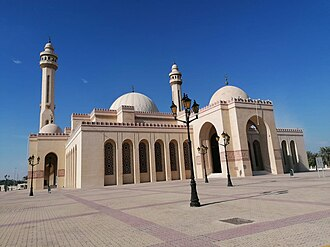

Общие сведения
La Mosquée Al Fateh, aussi appelée Grande mosquée Al Fateh ou Centre islamique Al Fateh, située à Manama, est la plus grande mosquée de Bahreïn.
جامع أحمد الفاتح المعروف أيضا باسم مركز أحمد الفاتح الإسلامي هو واحد من أكبر المساجد في العالم، وأكبر مسجد في البحرين، وتقدر مساحته بحوالي 6500 متر مربع ويستوعب 7000 مصلي في وقت واحد. بُنِيَ المسجد على يد أمير البحرين الراحل الشيخ عيسى بن سلمان آل خليفة في عام 1988 وسُمّي تيمنا باسم أحمد الفاتح الذي فتح البحرين. في عام 2006 أصبح جامع الفاتح موقع لمكتبة البحرين الوطنية.
The Al-Fateh Mosque, also known as the Al-Fateh Islamic Center and as the Al Fateh Grand Mosque, is a large mosque, located in Manama, Bahrain. Encompassing 6,500 square metres (70,000 sq ft), with the capacity to accommodate over 7,000 worshippers at a time, it was one of the largest mosques in the world. The mosque was built by the late Sheikh Isa Bin Salman Al Khalifa in 1987 and was named in honour of Ahmed Al Fateh. In 2006, Al-Fateh became the site of the National Library of Bahrain.
Masjid Agung Al Fateh adalah salah satu masjid terbesar di dunia, mencakup 6.500 meter persegi dan memiliki kapasitas untuk menampung lebih dari 7.000 jemaah sekaligus.. Masjid ini dibangun oleh almarhum Syekh Isa bin Salman Al Khalifa pada tahun 1987 dan diberi nama setelah Ahmed Al Fateh. Pada 2006, Al-Fateh menjadi situs Perpustakaan Nasional Bahrain.
جامع احمد فاتح جسے مرکز احمد فاتح اسلامی بھی کہا جاتا ہے، دنیا کی سب سے بڑی مساجد میں شمار ہوتا ہے اور بحرین کی سب سے بڑی مسجد ہے۔ اس کا مجموعی رقبہ تقریباً 6500 مربع میٹر ہے اور یہ مسجد بیک وقت 7000 نمازیوں کو سمو سکتی ہے۔ یہ مسجد بحرین کے مرحوم امیر شیخ عیسیٰ بن سلمان آل خلیفہ نے 1988 میں تعمیر کروائی اور اس کا نام "احمد الفاتح" کے نام پر رکھا گیا، جنھوں نے بحرین کو فتح کیا تھا۔ 2006 میں، جامع فاتح کو بحرین کی قومی لائبریری کا مقام بھی بنا دیا گیا۔
Die Ahmed-al-Fatih-Moschee, auch bekannt als Islamisches Ahmed-al-Fatih-Zentrum, war eine der größten Moscheen der Welt, umfasste 6.500 Quadratmeter und hatte die Kapazität für 7.000 Gläubige. Die Moschee wurde 1987 von Isa bin Salman Al Chalifa erbaut und nach Ahmed al-Fatih benannt. Er war ein Vorfahr der Al Chalifa und war der Eroberer von Bahrain. Im Jahr 2006 wurde die Moschee zum Standort der Nationalbibliothek von Bahrain.
La Mezquita Al-Fateh es una de las mezquitas más grandes del mundo, abarcando 6500 metros cuadrados y con una capacidad de más de 7000 fieles. La mezquita fue construida por el difunto Sheikh Isa ibn Salman Al Khalifa en 1987 y llamada en honor a Ahmed Al Fateh, conquistador de Baréin. En 2006, Al-Fateh se convirtió en la sede de la Biblioteca Nacional de Baréin.
La Grande Moschea Al-Fateh è una delle più grandi moschee al mondo, con una capacità di oltre 7.000 fedeli. Si trova a Manama, capitale del Bahrain.
De Al Fateh-moskee is een van de grootste moskeeën ter wereld, met een capaciteit van ruim 7.000 gelovigen. Het bevindt zich in Manama, de hoofdstad van Bahrein. De moskee is het grootste religieuze gebouw in Bahrein. Het is gebouwd aan King Faisal Highway, in de buitenwijk Juffair. Het ligt vlak bij het Al-Qudaibiya-paleis, het paleis waar de regering bijeenkomt.
Мече́ть аль-Фати́х, одна из самых больших мечетей в мире, способна одновременно вместить в себе более 7000 верующих. Мечеть — крупнейший храм и наиболее известная достопримечательность Бахрейна, доступная для экскурсионных посещений ежедневно, кроме пятниц и праздников.
Al-Fatih-moskén i Manama, Bahrain, är en av de största moskéerna i världen, med kapacitet för över 7 000 tillbedjare åt gången. Byggnaden är i klassisk islamsk arkitektur. Den är namngiven efter Ahmad Al Fateh och byggdes på order av shejk Isa bin Salman al-Khalifa.
На карте
Документы и ссылки
- Wikipédia — Français
- Wikipédia — العربية
- Wikipédia — English
- Wikipédia — Bahasa Indonesia
- Wikipédia — اردو
- Wikipédia — Deutsch
- Wikipédia — Español
- Wikipédia — Italiano
- Wikipédia — Nederlands
- Wikipédia — Русский
- Wikipédia — Svenska
- Wikidata — Q2086076
Данные: Викиданные (CC0), обновляются каждые 3 месяца. Год — самая ранняя известная дата постройки здания: для здания, ставшего мечетью позже (как Айя-София), это год постройки исходного здания. Фото: Викисклад, автор и лицензия — на странице каждой фотографии.